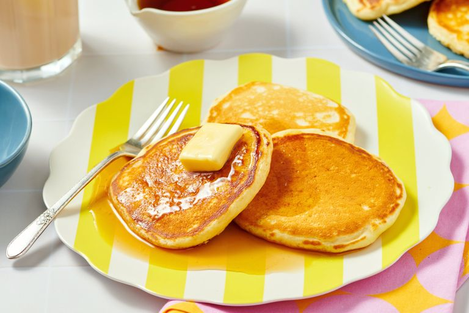

Pancake Recipes
Home

Description
Pancakes are a popular breakfast dish made from a simple batter of flour, eggs, milk, and baking powder.
They are cooked on a griddle or frying pan and can be served with a variety of toppings such as syrup, butter, fruits, or whipped cream.
Pancakes are a delicious and fluffy breakfast mealsthat can be served with syrup, honey, or fruits.
Ingredients
- 1 cup all-purpose flour
- 2 eggs
- 1 cup milk
- 2 tablespoons vegetable oil
- 1 teaspoon baking powder
- 1/2 teaspoon salt
- 1 tablespoon sugar (optional)
Steps
- Mix the dry ingredients in a bowl.
- In another bowl, whisk the wet ingredients.
- Combine the wet and dry ingredients, stirring until just mixed.
- Heat a lightly oiled griddle or frying pan over medium-high heat.
- Pour the batter onto the griddle to form pancakes.
- Cook until bubbles form on the surface, then flip and cook until golden brown.
- Serve hot with your choice of toppings.